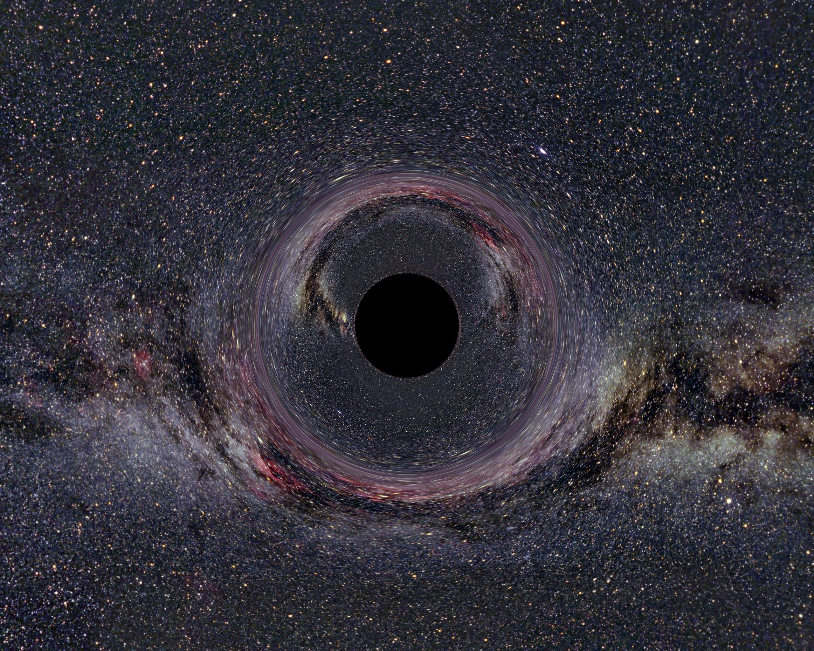
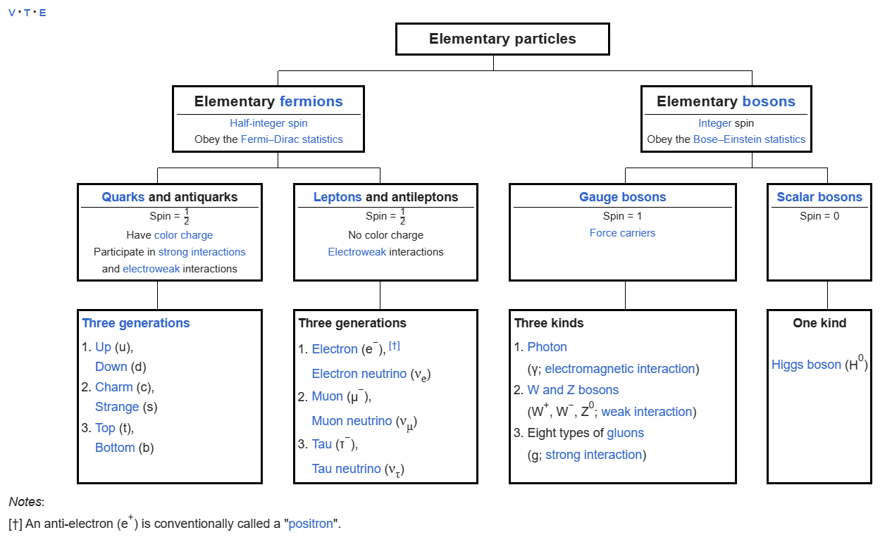

Quantum mechanics. Part 1
The standard modell describes which particles exist at fundamental levels, and learning about them is a truly enriching experience.
So what is quantum mechanics really?
To put it simply, quantum mechanics is basically just the physics of small particles. And when we write about particles, we often mean the fundamental building blocks that make up reality.
Anyways, to understand the building blocks that make up our universe we first need to look at what particles are made up of. To understand such concepts we can start with an atom. The atom was originally thought of to be the smallest “thing” an object is made of. So, if we try to look deeper into an object we can see that it is built up off of smaller building parts until we eventually reach what the Greeks called an atom, something uncuttable or indivisible.
When scientists invented the microscope a whole new realm of reality opened itself up. We saw for the first time that what we perceive with the naked eye is not the entirety of the story we tell ourselves. We later on learned that molecules, a collection of atoms together, exists and we for the first time in modern ages started exploring the real human physical limits of what we can observe with all the tools and technology at our disposal.
To explain further, when we discovered molecules, and started inspecting them we saw that they consisted of smaller building blocks as well. If we follow the old philosophers thought process of breaking down something into its smallest possible form, then a question arises, what is the smallest possible thing that exists? This is the atom, according to the old philosophers. Unfortunately the scientists jumped on the horses a bit too early and called what they discovered in 1827 the atom. Later on, we discovered that we are able to split up even atoms into smaller pieces.
A whole subcategory of physics opened up, and scientists were busy for years exploring and creating new theories in this whole new world of particles.
As you probably know of these things I’m going to cut a long story short and jump into the more fun parts, such as those in the realm of Quantum Physics. You see, when we started picking the atom itself apart, we found that it consists of an electron, a neutron and a proton. The combination of these three particles tells one story, but when we go deeper, and see what _these_ particles are made up of again, we paint a new picture.
For starters, we found that the proton exists because of what they first thought were quarks. Quarks were originally just the name of a smaller building block that consists of even smaller building blocks. These are not yet proven, but our leading theory is that these quarks are made up of what we term, strings. Behold, string theory.
String theory is a topic for another day, so let's jump back into the quantum realm. When particles arrange, they do so by the laws of nature. Peculiarly enough, these laws of nature are often described by nature itself, and seemingly just wait to be discovered. For instance, the four fundamental forces express themselves throughout the universe and dictate how matter interacts with each other. And that is not to mention the forces we haven't discovered yet.
I’m looking at you black matter
To briefly go through the four fundamental forces we can first start by looking at what we call gravity.
Gravity is the force that pulls us down onto earth. Each and every object has a gravitational force. The force attracts two objects towards each other. Both ways.
Simply put, the force or pull an object feels towards another object depends on the mass. The gravitational force doesn't paint the entire picture though, as there are other forces that interact with us. The other three fundamental forces are, the electromagnetic force, and the weak and strong nuclear force.
We are going to be taking a closer look at electromagnetic force in another post, so for now, let's quickly describe the weak and strong nuclear force before moving on.
The weak nuclear force is the name of the forces between particles. So the pull or push each particle has between themselves. So for instance, the electron and proton are oppositely charged so they repel each other. While two electrons would attract each other as they have the same charge.
On the other hand, the strong nuclear force describes how the forces between these particles behave. And to look further into that, we need to look at a concept we mentioned earlier, quarks.
Unfortunately for us quarks are only 1 piece of the puzzle. When looking at a particle we can first place them into one of two categories, either a fermion, or a boson. Whether a particle is a boson or a fermion depends on their spin and the symmetry of the system. We are not going deeper than that today, so let's look at these fermions and bosons.
Fermions on the one hand consist of quarks and leptons, while bosons are divided into gauge and scalar bosons.
This diagram neatly summarizes the entire particle model which is more commonly known as the Standard Model.
Well, that was a lot of information. We are going to end it here for this post as the topic is way too deep to explore in one post.
Keep in the loop for when I post the next update by signing up for my newsletter ?here? I plan to keep writing about quantum mechanics and other topics I find interesting.
If you for any reason liked my post and want to contribute to help me make more similar content, feel free to consider donating me a coffee:))
https://www.buymeacoffee.com/haycon
Until next time, peace.